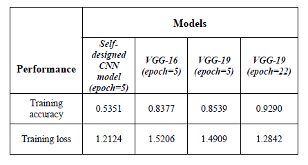
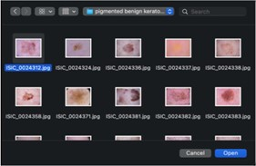
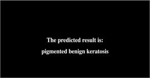
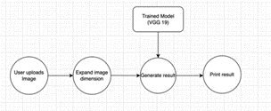

Result and Discussion
1. Comparison of Three Models:
- Under epoch=5 and batch size=16, the training accuracy and loss of the three models are shown.
- It can be observed that there is a significant gap in the performance between the self-designed CNN model and those of the VGG family.
- While the accuracy of the two VGG models is on the same level, VGG-19 outperforms VGG-16 by a narrow margin.
- Therefore, after retraining the VGG-19 model under epoch=22 and batch size=16, it is chosen to be integrated into the web application.

- As the number of convolutional layers increases, the model becomes more capable of extracting higher-level, abstract elements composed of low-level features.
- Given the complicated, nine-category classification task, where the cancer images are rich in features like shape and color and yet might not be that distinct from one another, the ability to extract and distinguish high-level features is essential for high accuracy.
- Therefore, a shallow model like the self-designed network yields poor performance, whereas VGG-19 shows high accuracy.
2. Web Application:
- Upon opening the application, the user will see the homepage shown in Fig.
- To upload an image for diagnosis, the user clicks the choose file button and uploads their image.

- After a successful upload, the application jumps to another webpage and produces a result based on the proposed model that achieves the best accuracy.
- To generate a prediction, the trained model is firstly loaded into the Python program using a function called load_model in Keras.
- Then, after the model produces probabilities for each skin cancer category, the cancer type with the highest probability value is chosen to be the predicted result and will be presented to the user.

- In summary, the workflow of the proposed model is shown in Fig

3. Conclusion:
- To summarize, performances of three CNN models, namely VGG-16, VGG-19, and a self-designed model, are compared on a multiclass skin cancer classification task.
- Empirical evidence suggests that VGG-19 has the best performance with a training accuracy of 0.9290 and a training loss of 1.2842.
- The VGG-19 model is integrated into a web application to assist the diagnosis of skin cancer.
References:
- [1] Basic Information About Skin Cancer. Centers for Disease Control and Prevention. https://www.cdc.gov/cancer/skin/basic_info/index.htm 2021.
- [2] SKIN CANCER. American Academy of Dermatology Association. https://www.aad.org/media/stats-skin-cancer, 2021.
- [3] P. Zhu, "Convolutional Neural Networks Based Study and Application for Multicategory Skin Cancer Detection," 2022 3rd International Conference on Electronic Communication and Artificial Intelligence (IWECAI), 2022, pp. 558-561, doi: 10.1109/IWECAI55315.2022.00114. IEEE Xplore